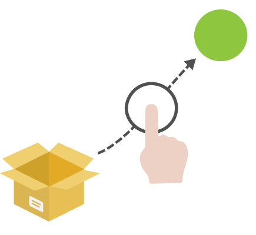

SIDEBARGOESHERE
Welcome to the developer documentation for Talent App Store.
Talent App Store is an open, peer to peer integration marketplace where customers can install pre-integrated Human Resources SaaS microservices - aka apps - into an agile HR technology stack, protected by the strongest security in the industry.

We originally built Talent App Store to make Java integrations with the SnapHire recruitment platform faster and easier. We soon heard from our customers that TAS should be opened to all HR software, and should support all development platforms, and all developers, so that's what we did.
If you're an HR software developer, building a TAS app using our developer portal lets any of the hundreds of TAS customers click to install your service into their HR technology stack in seconds. By using any of TAS's pre-integration models, your app can: